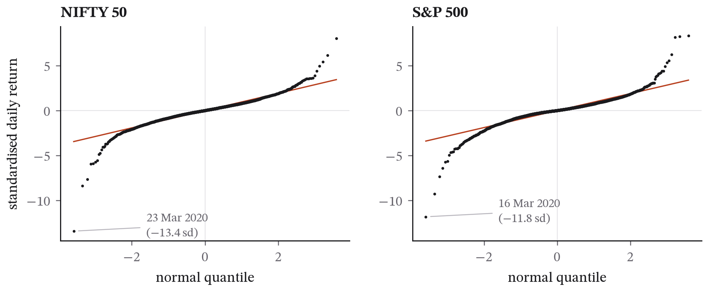
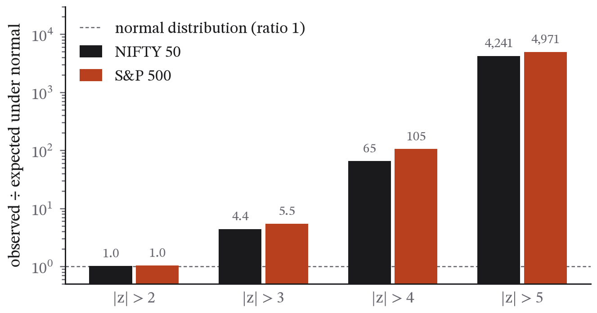
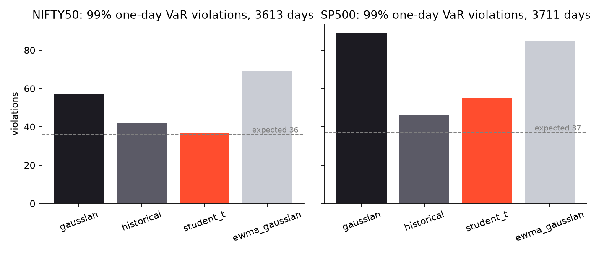
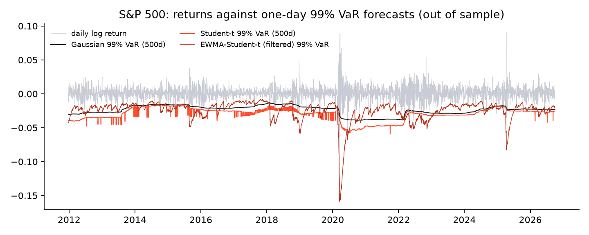
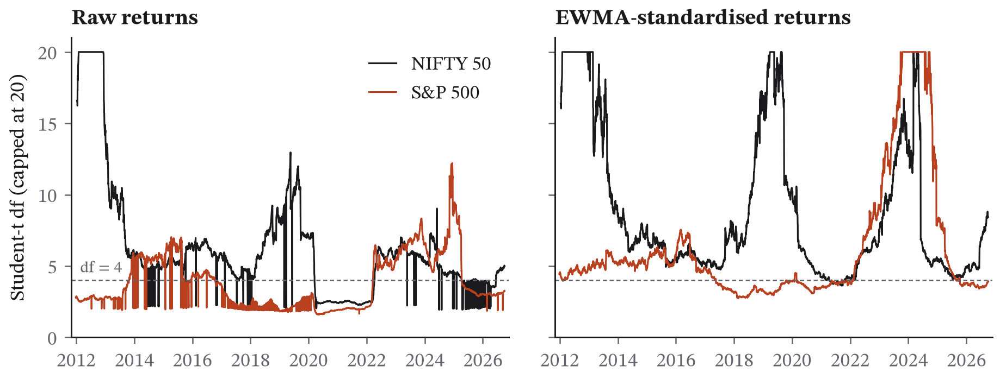

Fat Tails and the Failure of Gaussian Risk Models: Out-of-Sample Value-at-Risk Evidence from NIFTY 50 and S&P 500, 2010–2026
Independent researcher, Kanpur, India · pranjulrathour41@gmail.com · https://pranjulrathour.scult.in
October 2026
Keywords: Value at Risk, fat tails, Student-t, EWMA, filtered historical simulation, Kupiec test, Christoffersen test, NIFTY 50, S&P 500 · JEL: C58, G17, G32
Daily equity-index returns are known to have heavier tails than the normal distribution, yet Gaussian assumptions remain common in introductory risk practice. This paper measures, on 16.75 years of daily data for India’s NIFTY 50 and the US S&P 500 (January 2010 to September 2026), how far the Gaussian model fails and which simple alternatives repair it. Both indices show excess kurtosis near 13 and negative skew; moves beyond four standard deviations occurred 65 times (NIFTY 50) and 105 times (S&P 500) more often than a normal distribution predicts. Six one-day Value-at-Risk (VaR) models were backtested strictly out of sample with a rolling 500-day estimation window: Gaussian, historical simulation, unconditional Student-t, EWMA-Gaussian, a filtered Student-t (EWMA volatility with a t fitted to standardised returns) and filtered historical simulation (FHS). At the 99% level the Gaussian model produced 57 violations against 36 expected on NIFTY 50 and 89 against 37 on S&P 500, failing the Kupiec coverage test at the 1% level on both. The two hypotheses “the tails are the problem” and “volatility clustering is the problem” were separable: unconditional Student-t fixed coverage but left violations clustered; EWMA-Gaussian removed clustering but under-covered; only FHS, which addresses both, passed the Christoffersen conditional-coverage test at 95% on both indices (p = 0.50 and 0.98) and at 99% on NIFTY 50 (p = 0.25). No model passed conditional coverage at 99% on the S&P 500, because of the March 2020 episode. A naive variant (EWMA volatility with a unit-variance t quantile using the raw-return degrees of freedom) failed badly and is reported as a cautionary result: unconditional tail estimates largely measure volatility clustering, and reusing them inside a volatility model double-counts it. All code and data snapshots are public and the full analysis reproduces with one command.
The observation that financial returns have fat tails is at least six decades old (Mandelbrot 1963; Fama 1965), and the consequences for risk measurement were made plain by the 2008 crisis, when Gaussian-based Value-at-Risk (VaR) models at several institutions reported losses that were “25-standard-deviation events” on consecutive days. Nevertheless the Gaussian model remains the default in textbooks, spreadsheets and much introductory practice, because it is simple, closed-form and requires estimating only a mean and a variance.
This paper asks two concrete questions on recent public data. First, how large is the Gaussian error for a one-day VaR on two major equity indices, measured out of sample over a period that includes the 2020 pandemic crash, the 2022 rate shock and the 2025 tariff episode? Second, which repair works: a heavier-tailed distribution, a time-varying volatility, or both? The second question matters because the two repairs are routinely conflated. A fat-tailed unconditional distribution and a Gaussian distribution with clustered volatility produce the same unconditional histogram, but they imply different risk forecasts and different backtest failures.
The contribution is deliberately modest and fully reproducible: a clean out-of-sample comparison on two indices with a pre-specified design, standard backtests, and public code and data. The paper is also candid about a specification that failed during the study, because the failure is itself informative.
Daily closing levels of the NIFTY 50 (Yahoo Finance ticker ^NSEI) and the S&P 500 (^GSPC) were downloaded on 1 October 2026 with the yfinance library (version 1.7.0). The series are unadjusted index levels; dividends are not included, which is immaterial for one-day log returns. NIFTY 50 history on Yahoo begins on 17 September 2007; both series were truncated to the common analysis window 1 January 2010 to 30 September 2026, giving 4,113 daily log returns for NIFTY 50 and 4,211 for the S&P 500, each on its own trading calendar. The snapshot (tickers, row counts, download time) is recorded in data/SNAPSHOT.json; the raw files are committed with the code.
Summary statistics (Table 1) are computed on the full window.
Table 1. Daily log returns, 2010-01-04 to 2026-09-30.
| NIFTY 50 | S&P 500 | |
|---|---|---|
| Observations | 4,113 | 4,211 |
| Mean (daily) | 0.036% | 0.046% |
| Std. dev. (daily) | 1.039% | 1.084% |
| Annualised volatility | 16.5% | 17.2% |
| Skewness | −0.88 | −0.61 |
| Excess kurtosis | 13.34 | 13.49 |
| Jarque–Bera statistic | 31,022 | 32,193 |
| Worst day | −13.90% (2020-03-23) | −12.77% (2020-03-16) |
| Best day | +8.40% (2020-04-07) | +9.09% (2025-04-09) |
| Student-t df (MLE, full sample) | 4.06 | 2.78 |
The design was fixed before any result was examined, with one documented revision described in Section 3.4.
Returns were standardised by the full-sample mean and standard deviation. For thresholds k = 2, 3, 4, 5 the empirical frequency of |z| > k was compared with the two-sided normal tail probability 2Φ(−k), and the ratio reported. Jarque–Bera tests normality. A Student-t distribution (location, scale, degrees of freedom) was fitted by maximum likelihood to the full sample.
One-day VaR at confidence α ∈ {0.95, 0.99} was forecast for every day t from an estimation window of the W = 500 trading days ending at t − 1 (roughly two years). The window length and the EWMA decay are the textbook defaults (RiskMetrics 1996) and were not tuned. Six models:
Models 1–3 assume constant volatility within the window and differ in tail shape; model 4 has time-varying volatility with Gaussian tails; models 5 and 6 have both. This structure is what allows the two hypotheses to be separated.
For each model and α, a violation is a day with r_t < −VaR_t. The Kupiec (1995) likelihood-ratio test of unconditional coverage tests whether the violation rate equals 1−α; the Christoffersen (1998) independence test tests whether violations cluster (a first-order Markov alternative); the conditional-coverage test combines the two. Also reported: violations by calendar year, mean loss beyond VaR on violation days, and the mean VaR level (a measure of capital required).
The first run used models 1–4. A fifth model was then specified as “EWMA volatility times a unit-variance Student-t quantile, using the degrees of freedom from the raw-return window fit”. It produced far more violations than the Gaussian (273 against 181 expected at 95% on NIFTY 50; 317 against 186 on S&P 500) and was replaced by models 5 and 6. The variant is still computed and its results reported in results.json under discarded_variants. Section 5.3 explains why it failed. No other change was made after seeing results.
python analysis.py in the paper’s directory reproduces every number and figure in this paper from the committed data files in about ten minutes on a 12-core laptop (the Student-t fits are parallelised). Python 3.13, NumPy, pandas, SciPy and Matplotlib; exact versions in the repository’s requirements.txt.
Figure 1 shows normal quantile–quantile plots; Figure 2 shows the exceedance ratios. Table 2 gives the counts.
Table 2. Observed versus Gaussian-expected counts of |z| > k.
| Threshold | NIFTY 50 observed | expected | ratio | S&P 500 observed | expected | ratio |
|---|---|---|---|---|---|---|
| 2σ | 190 | 187.1 | 1.02 | 198 | 191.6 | 1.03 |
| 3σ | 49 | 11.1 | 4.4 | 62 | 11.4 | 5.5 |
| 4σ | 17 | 0.26 | 65 | 28 | 0.27 | 105 |
| 5σ | 10 | 0.0024 | 4,241 | 12 | 0.0024 | 4,971 |

Figure 1. Normal quantile–quantile plots of standardised daily log returns, 2010–2026. The S-shape is the signature of heavy tails: extreme observations lie far beyond the line a normal distribution predicts.

Figure 2. Observed frequency of |z| > k relative to the normal expectation (log scale). Both indices exceed the Gaussian prediction by a factor of 4–5 at 3σ, 65–105 at 4σ and over 4,000 at 5σ.
At two standard deviations the normal distribution is approximately right; the discrepancy opens at three and becomes extreme at four and five. Under a Gaussian model a 5σ day should occur about once in 1,700 years of trading; each index had ten or more in under seventeen years. Both Jarque–Bera statistics reject normality at any conventional level.
The full-sample Student-t fits give 4.06 degrees of freedom for NIFTY 50 and 2.78 for the S&P 500. A df below 4 implies an infinite fourth moment; a df below 3, an infinite third. These should be read as summaries of the unconditional histogram rather than as structural parameters, for the reason developed in Section 5.3.
Forecasts begin on 13 January 2012 (NIFTY 50; 3,613 forecast days) and 27 December 2011 (S&P 500; 3,711 days). Table 3 reports the backtests; Figure 3 plots the 99% violation counts; Figure 4 shows the S&P 500 return series against three of the 99% VaR paths.
Table 3. One-day VaR backtests, rolling 500-day window, out of sample. UC = Kupiec unconditional coverage; IND = Christoffersen independence; CC = conditional coverage. p-values; bold marks p ≥ 0.05 (not rejected).
NIFTY 50, 95% (expected violations 180.7)| Model | Violations | UC p | IND p | CC p | Mean VaR | Mean excess loss |
|---|---|---|---|---|---|---|
| Gaussian | 161 | 0.127 | 0.017 | 0.018 | 1.63% | 0.82% |
| Historical | 178 | 0.839 | 0.009 | 0.031 | 1.55% | 0.83% |
| Student-t | 192 | 0.391 | 0.009 | 0.022 | 1.49% | 0.81% |
| EWMA-Gaussian | 207 | 0.049 | 0.730 | 0.136 | 1.51% | 0.61% |
| Filtered Student-t | 219 | 0.005 | 0.621 | 0.016 | 1.48% | 0.60% |
| FHS | 189 | 0.527 | 0.317 | 0.496 | 1.56% | 0.62% |
| Model | Violations | UC p | IND p | CC p | Mean VaR | Mean excess loss |
|---|---|---|---|---|---|---|
| Gaussian | 57 | 0.001 | 0.000 | 0.000 | 2.32% | 1.15% |
| Historical | 42 | 0.339 | 0.001 | 0.003 | 2.65% | 1.38% |
| Student-t | 37 | 0.885 | 0.059 | 0.167 | 2.62% | 1.51% |
| EWMA-Gaussian | 69 | 0.000 | 0.768 | 0.000 | 2.14% | 0.75% |
| Filtered Student-t | 56 | 0.002 | 0.888 | 0.009 | 2.39% | 0.64% |
| FHS | 46 | 0.113 | 0.618 | 0.252 | 2.53% | 0.69% |
| Model | Violations | UC p | IND p | CC p | Mean VaR | Mean excess loss |
|---|---|---|---|---|---|---|
| Gaussian | 181 | 0.731 | 0.000 | 0.000 | 1.68% | 0.98% |
| Historical | 176 | 0.468 | 0.000 | 0.000 | 1.67% | 0.98% |
| Student-t | 215 | 0.030 | 0.000 | 0.000 | 1.47% | 0.99% |
| EWMA-Gaussian | 206 | 0.130 | 0.285 | 0.179 | 1.51% | 0.71% |
| Filtered Student-t | 239 | 0.000 | 0.228 | 0.000 | 1.43% | 0.69% |
| FHS | 187 | 0.913 | 0.845 | 0.975 | 1.60% | 0.71% |
| Model | Violations | UC p | IND p | CC p | Mean VaR | Mean excess loss |
|---|---|---|---|---|---|---|
| Gaussian | 89 | 0.000 | 0.000 | 0.000 | 2.39% | 1.10% |
| Historical | 46 | 0.157 | 0.000 | 0.000 | 3.00% | 1.32% |
| Student-t | 55 | 0.006 | 0.000 | 0.000 | 2.98% | 1.18% |
| EWMA-Gaussian | 85 | 0.000 | 0.059 | 0.000 | 2.13% | 0.78% |
| Filtered Student-t | 64 | 0.000 | 0.005 | 0.000 | 2.49% | 0.66% |
| FHS | 46 | 0.157 | 0.002 | 0.004 | 2.88% | 0.62% |

Figure 3. Violations of one-day 99% VaR by model over 3,613 (NIFTY 50) and 3,711 (S&P 500) out-of-sample days; the dashed line is the expected count under correct coverage.

Figure 4. S&P 500 daily log returns against three out-of-sample 99% VaR paths. The constant-volatility models move slowly and are breached in clusters; the filtered model rises with volatility and is breached less often but still in March 2020.
Four patterns stand out.
At 95%, the Gaussian model’s coverage is fine; its independence is not. On both indices the Gaussian violation count is within sampling error of expected (161 vs 181; 181 vs 186), yet the independence test rejects decisively (p = 0.017 and p < 0.001). The problem at 95% is not the tail shape but the clustering: violations arrive in bunches during volatile periods and are absent in calm ones. The three constant-volatility models (Gaussian, historical, Student-t) all fail independence on both indices; the three EWMA-based models all pass it at 95%.
At 99%, the Gaussian model fails coverage badly. Fifty-seven violations against 36 expected on NIFTY 50 (1.6% rate) and 89 against 37 on S&P 500 (2.4% rate): the model under-estimated the 1% tail by 58% and 140% respectively. This is the fat-tail failure in its textbook form.
The two repairs fix different things. Unconditional Student-t restores 99% coverage on NIFTY 50 (37 violations, UC p = 0.89) but leaves clustering (IND p = 0.059, and p < 0.001 on S&P 500). EWMA-Gaussian removes clustering (IND p = 0.77 and 0.06) but under-covers at 99% (69 and 85 violations), because Gaussian tails scaled by a correct volatility are still too thin. Neither repair alone is sufficient at 99%.
FHS is the only model that passes conditional coverage at 95% on both indices and at 99% on NIFTY 50. Its 95% p-values (0.50 and 0.98) are the only ones in the table above 0.5. At 99% on the S&P 500 it has correct coverage (46 vs 37, UC p = 0.16) but fails independence (p = 0.002): the violations by year show why. Five of its 46 S&P 500 violations fall in 2020 and arrive within a few weeks, which a first-order Markov independence test penalises regardless of how well the rest of the sample is covered. No model passes independence at 99% on the S&P 500.
Two secondary observations. The EWMA-based models have markedly smaller losses beyond VaR on violation days (0.6–0.8% against 1.0–1.5% for the constant-volatility models): when they are wrong, they are less wrong, because their VaR has already risen with the volatility. And the models’ mean VaR levels differ by up to 40% (2.13% to 3.00% at 99% on the S&P 500), which in practice is a 40% difference in required capital; the historical and Student-t models buy their coverage with permanently higher VaR, while FHS buys it with a VaR that is high only when volatility is high.

Figure 5. Student-t degrees of freedom fitted on each rolling 500-day window (capped at 20 for display): raw returns (left) and EWMA-standardised returns (right). The dashed line marks df = 4, below which the fourth moment is infinite.
Figure 5 plots the rolling fitted degrees of freedom. The raw-return fits (left) are low and unstable: the S&P 500 median across windows is 3.0, 62% of windows are below 4 and 17% are at or below 2, with the fit jumping between local optima in 2014–2016 and 2024–2025. The fits on EWMA-standardised returns (right) are higher and smoother: medians of 6.5 (NIFTY 50) and 4.7 (S&P 500), no window at or below 2, and 3.6% and 38% of windows below 4. Once volatility clustering is removed, the remaining tail is heavy but finite-variance and far less extreme than the unconditional histogram suggests.
Gaussian VaR is approximately right at 95% and badly wrong at 99%, on both indices, and the reason is the point at which the normal tail departs from the empirical one: between two and three standard deviations. A 95% one-day VaR sits at about 1.65σ, inside the region where the normal is adequate; a 99% VaR sits at 2.33σ, where it is not. Practitioners who validate a Gaussian model at 95% and then use it at 99% or 99.9%, as regulatory capital rules require, are validating in the region where the model works and applying it where it does not.
The paper’s central empirical point is that fat tails and volatility clustering are different problems with different fixes, and that the backtests distinguish them. The independence test is the diagnostic for clustering; the coverage test at a high confidence level is the diagnostic for tails. Of the six models, only the two that address both pass both diagnostics anywhere, and only FHS does so convincingly. This is consistent with the literature that has compared VaR models since the late 1990s (Kuester, Mittnik and Paolella 2006, in particular, found filtered approaches dominant), and the contribution here is to show it cleanly, on current data including the 2020 episode, with a design simple enough to be checked by a student.
The failed specification scaled EWMA volatility by a Student-t quantile standardised to unit variance, √((df−2)/df) · t_{1−α}(df), using the degrees of freedom from the raw-return fit. Two things went wrong at once. First, when df is near 2, the unit-variance standardisation collapses the quantile: at df = 2.5, the 99% unit-variance t quantile is about −2.0, below the Gaussian −2.33, because almost all of a near-2-df t distribution’s variance lives in its extreme tail, so a unit-variance version has a narrow body. Second, and more fundamentally, the raw-return df is not a measure of conditional tail thickness; it is a measure of the mixture of volatility regimes in the window. Using it inside a model that already removes volatility regimes counts the same effect twice. The filtered Student-t (model 5), which fits the t to standardised returns, does not have this problem; its df is higher (Section 4.3) and its forecasts are sensible, although it still over-violates at 95%, for the reason that a t distribution’s 95% quantile is inside the empirical one when the t is fitted to match the extreme tail. FHS, which uses the empirical quantile of standardised returns, has no parametric form to get wrong.
Two indices. The pattern is consistent with the literature but the sample is two series; the paper claims nothing about individual stocks, other asset classes or other markets.
Fixed, untuned parameters. The 500-day window and λ = 0.94 are defaults. A tuned window or a GARCH volatility would likely improve the EWMA-based models further; the design chose not to tune anything so that the comparison could not be accused of in-sample fitting.
Index levels, not investable returns. Dividends, transaction costs and the impossibility of trading an index directly are ignored. For a one-day VaR on an index-tracking position these are second-order.
The independence test is a first-order Markov test. It is the standard, and it is sensitive to a single cluster: the March 2020 run of violations alone is enough to reject independence for every model on the S&P 500 at 99%. A test over longer dependence (Engle and Manganelli 2004) might be more or less forgiving; it was not run because it was not pre-specified.
Expected Shortfall is not backtested. ES is now the regulatory standard for market risk (Basel III); its backtesting is harder and was out of scope. The “mean excess loss” column is a descriptive stand-in.
Yahoo Finance data. Free, widely used, and not an official source. The two indices’ official closes are published by NSE and S&P Dow Jones Indices; discrepancies, if any, would be at the fourth decimal of a daily return and would not change any conclusion.
On sixteen and three-quarter years of daily data for the NIFTY 50 and the S&P 500, the Gaussian one-day VaR model is adequate at 95% and fails at 99%, where it under-predicts violations by 58% and 140% respectively. The failure has two separable causes, fat tails and volatility clustering, and a model must address both to pass standard backtests. Of six simple models tested strictly out of sample with untuned parameters, filtered historical simulation was the only one to pass conditional coverage at 95% on both indices and at 99% on NIFTY 50; no model passed independence at 99% on the S&P 500 because of the March 2020 cluster. A variant that reused an unconditional tail estimate inside a volatility model failed badly, illustrating that unconditional fat tails are, in large part, volatility clustering seen without a volatility model. The analysis reproduces from public data with one command.
All code, the committed data snapshots (data/NIFTY50_daily_close.csv, data/SP500_daily_close.csv, data/SNAPSHOT.json), results.json containing every number in this paper, and the figure-generation code are available at https://github.com/Pranjulrathour/research under papers/p1-fat-tails/. Code is MIT-licensed. Index data are from Yahoo Finance via yfinance and are redistributed here only as a dated snapshot for reproducibility.
The author has no competing interests and received no funding for this work.